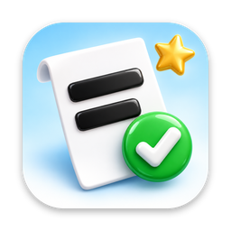

CorrectionGame
Faites participer la classe à la correction.
Projetez un corrigé PDF, masquez les réponses et révélez-les une par une au rythme des élèves.
Une séance en trois temps
Préparer le corrigé
Ouvrez un ou plusieurs PDF. Placez des masques et ajoutez des textes, traits ou surlignages.
Interroger la classe
Répartissez les questions entre les élèves présents. Révélez les réponses et attribuez des points selon votre barème.
Reprendre plus tard
Enregistrez les masques, les annotations et les données de classe dans un fichier de session local.
Installer sur Mac
Ouvrez le DMG et glissez CorrectionGame dans le dossier Applications. L’application fonctionne hors ligne. Cette version est signée ad hoc et n’est pas notarisée par Apple.